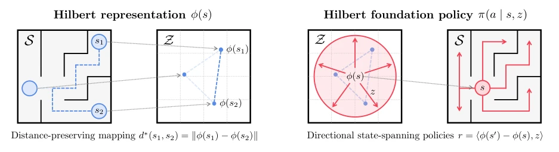
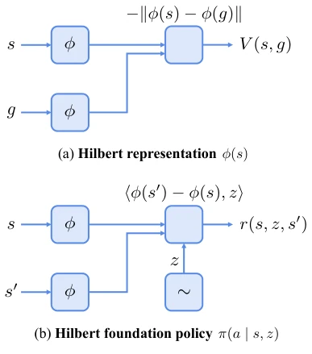
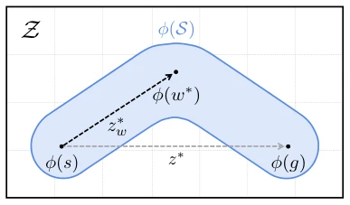
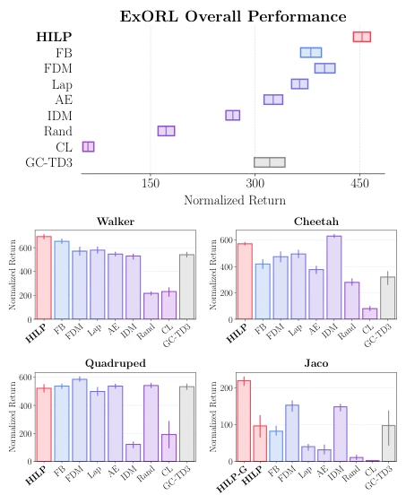
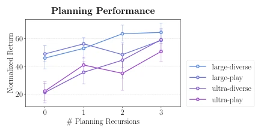
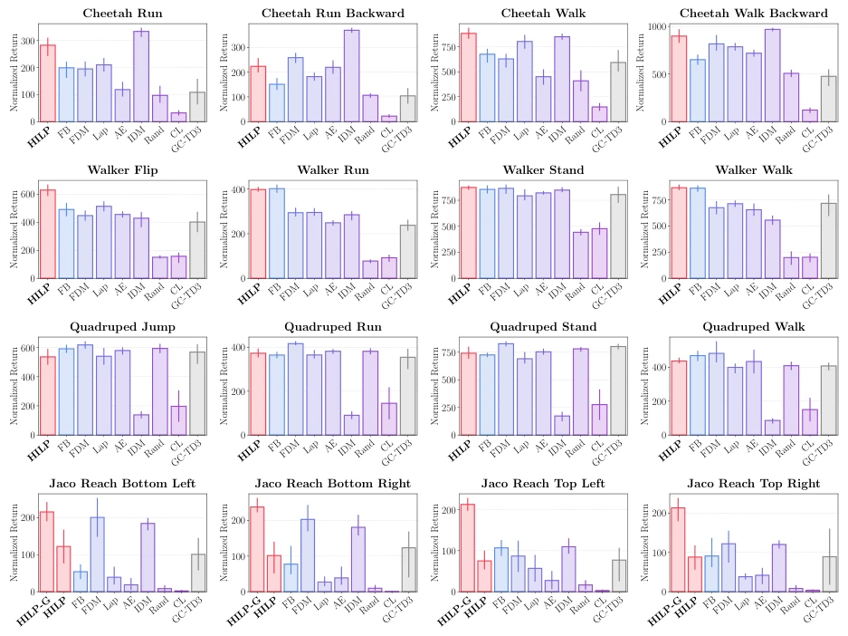
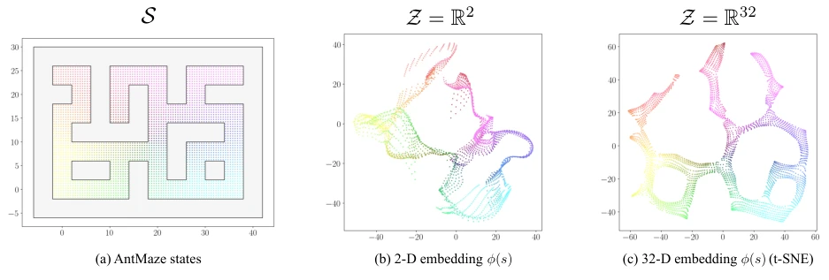
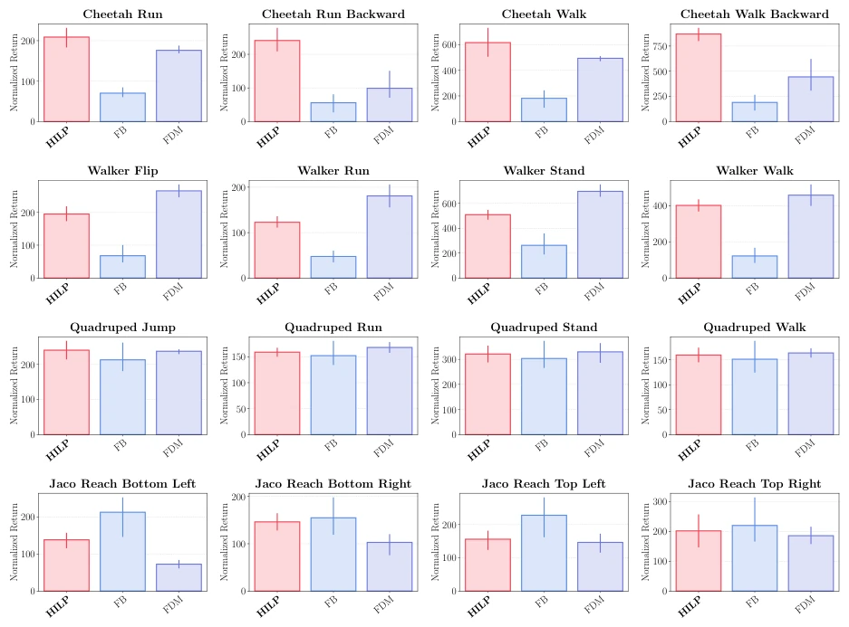

This paper attempts to unify the pretraining objectives of offline reinforcement learning using the geometric properties of Hilbert Space. While it sounds mathematically beautiful, can it truly withstand the noise of the real world in practical deployment? The authors propose HILP, the core of which is mapping states to a latent space that preserves time distance, then training the policy to cover all directions. The advantage is strong zero-shot adaptability, capable of handling both zero-shot RL and Goal-conditioned RL simultaneously, even without fine-tuning, switching tasks via a simple "prompt" vector z. The drawback is assuming the environment is a deterministic MDP, and latent space distance must strictly equal time distance, which may be only an approximation in complex dynamics, and planning may even fail due to embedding errors. However, the experimental results are indeed impressive, on AntMaze and Kitchen combined with planning even exceeding specially designed GCRL methods. It provides a new geometric perspective for offline pretraining, but will the assumption of "perfect isometric embedding" collapse on real robots? Worth observing, after all, mathematical beauty does not equal engineering robustness, and offline data quality has a huge impact on representation learning.
研究动机Motivation
现有离线预训练方法各有短板，难以兼顾通用性与性能。Behavioral Cloning (BC) 依赖高质量演示数据 (Ajay et al., 2021; Reed et al., 2022)，数据获取成本高且限制了可用性，无法利用次优数据。Goal-conditioned RL 只能学到到达目标的行为，行为多样性不足 (Chebotar et al., 2021; Eysenbach et al., 2022)，难以最大化任意奖励函数。无监督技能发现虽然通用，但可扩展性和优化困难 (Gregor et al., 2016; Eysenbach et al., 2019)。作者希望找到一个能捕捉多样、长视界行为的通用目标，无需在线交互，且能零样本适应新任务。现有方法要么依赖特定任务结构，要么无法有效利用未标记数据中的全局时序关系，导致下游任务适配能力弱，无法像 NLP 那样通过预训练实现通用适应。
Existing offline pretraining methods each have shortcomings, making it difficult to balance generality and performance. Behavioral Cloning (BC) relies on high-quality demonstration data (Ajay et al., 2021; Reed et al., 2022), data acquisition cost is high and limits availability, unable to utilize suboptimal data. Goal-conditioned RL can only learn behaviors to reach goals, behavior diversity is insufficient (Chebotar et al., 2021; Eysenbach et al., 2022), difficult to maximize arbitrary reward functions. Unsupervised skill discovery is general but has scalability and optimization difficulties (Gregor et al., 2016; Eysenbach et al., 2019). The authors hope to find a general objective that captures diverse, long-horizon behaviors, requiring no online interaction, and capable of zero-shot adaptation to new tasks. Existing methods either rely on specific task structures or fail to effectively utilize global temporal relationships in unlabeled data, leading to weak downstream task adaptation capability, unable to achieve general adaptation through pretraining like NLP.

Figure 1. Illustration of HILPs. (left) We first train a distance-preserving mapping ϕ : S →Z that maps temporally similar states to spatially similar latent states (d∗denotes the temporal distance). (right) We then train a latent-conditioned policy π(a | s, z), which we call a Hilbert foundation policy, that spans that latent space with directional movements. This policy captures diverse long-horizon behaviors from unlabeled data, which can be directly used to solve a variety of downstream tasks efficiently, even in a zero-shot manner.
方法Method
整体流程分两步。第一步训练 Hilbert 表示 φ: S → Z。利用目标条件价值函数 V(s, g) = -||φ(s) - φ(g)|| 来学习，使得隐空间欧氏距离对应最优时间距离 d*。这步用 IQL 风格的 TD 损失，配合 hindsight relabeling，将状态映射为保持时序结构的几何抽象。第二步训练 Hilbert Foundation Policy π(a|s, z)。使用内在奖励 r(s, z, s') = <φ(s') - φ(s), z>，其中 z 是单位向量。这迫使策略学习在隐空间所有方向上的移动，覆盖长视界行为。测试时，对于新奖励函数，通过线性回归找最优 z 实现 Zero-shot RL；对于 Goal 任务，设 z 为指向目标的方向向量。还引入了 Test-time Planning，通过寻找中点子目标 w* 来修正方向，缓解嵌入误差，利用代数运算而非额外网络查询实现高效规划。
The overall process is divided into two steps. The first step trains the Hilbert representation φ: S → Z. Utilizing the goal-conditioned value function V(s, g) = -||φ(s) - φ(g)|| for learning, making latent space Euclidean distance correspond to optimal time distance d*. This step uses IQL-style TD loss, combined with hindsight relabeling, mapping states to geometric abstractions preserving temporal structure. The second step trains the Hilbert Foundation Policy π(a|s, z). Using intrinsic reward r(s, z, s') = <φ(s') - φ(s), z>, where z is a unit vector. This forces the policy to learn movement in all directions in the latent space, covering long-horizon behaviors. During testing, for new reward functions, find optimal z via linear regression to achieve Zero-shot RL; for Goal tasks, set z as the direction vector pointing to the goal. Test-time Planning is also introduced, correcting direction by finding midpoint subgoal w*, mitigating embedding errors, achieving efficient planning via algebraic operations rather than extra network queries.

Figure 2. Diagram of HILPs. (a) We train a Hilbert representation ϕ(s) using a goal-conditioned value learning objective with the value function parameterized as V (s, g) = −∥ϕ(s) −ϕ(g)∥. (b) We train a Hilbert foundation policy π(a | s, z) using the intrinsic reward function r(s, z, s′) defined as the inner product between ϕ(s′) −ϕ(s) and a randomly sampled unit vector z.

Figure 3. Test-time midpoint planning. In the presence of em- bedding errors, the direction toward the midpoint subgoal w∗can be more accurate than the direction toward the goal g.
Tested on 7 robot environments (Walker, Cheetah, AntMaze, Kitchen, etc.). Datasets from ExORL and D4RL, containing state and pixel observations. Compared with Forward-Backward (FB), Successor Features (SF), Goal-conditioned RL (GC-TD3, GC-IQL, etc.). The metric is Normalized Return. Results show HILP is overall best in Zero-shot RL, on AntMaze long-horizon tasks combined with Planning even exceeds specialized GCRL methods. Ablation experiments show increasing Planning recursion count can improve performance. Proves capturing global temporal structure is more effective than simply cloning actions or local features, and adapts to new tasks without extra training. Performs well under pixel observations, demonstrating visual reasoning capabilities.

Figure 5. Zero-shot RL performance. HILP achieves the best zero-shot RL performance in the ExORL benchmark, outperform- ing previous state-of-the-art approaches. The overall results are aggregated over 4 environments, 4 tasks, 4 datasets, and 4 seeds (i.e., 256 values in total).

Figure 7. Planning performance in AntMaze (8 seeds). Test- time midpoint planning (Section 5.3) improves performance as the number of recursive refinements increases.

Figure 14. Per-task performances on the state-based ExORL benchmark. The results are aggregated over 4 datasets and 4 seeds (i.e., 16 values in total).
其他图片Other Figures

Figure 11. Visualization of Hilbert representations. We visualize Hilbert representations learned on the antmaze-large-diverse dataset. Since Hilbert representations are learned to capture the temporal structure of the MDP, they focus on the global layout of the maze even when we use a two-dimensional latent space (D = 2), and accurately capture the maze layout with a 32-dimensional latent space (D = 32).

Figure 17. Per-task performances on the pixel-based ExORL benchmark. The results are aggregated over 4 datasets and 4 seeds (i.e., 16 values in total).